Contexto
Uma empresa do setor de energia usava um app interno para gerenciar as metas de desempenho de toda a companhia. O app atendia dois perfis:
- Colaboradores, que planejam, acompanham e atualizam as próprias metas
- Gestores e administradores, que visualizam as metas das equipes e têm funções extras, como gerenciar papéis de usuários
O app funcionava, mas era visualmente carregado e difícil de entender. Era um projeto estratégico para um cliente importante, então eu fiquei responsável por investigar os problemas e propor uma nova experiência.
O desafio
O sinal mais claro do problema era que o app dependia de um Guia do Usuário para ser usado. Para planejar ou atualizar uma meta, as pessoas precisavam consultar um documento no SharePoint.
A tela principal concentrava funcionalidades, filtros e informações sem hierarquia. Além disso, o app tinha regras de negócio importantes (tipos de meta diferentes, regras de status, sub-metas) que não apareciam em nenhum lugar da interface.
Pergunta que guiou o projeto Como fazer a interface ser intuitiva, para quem usa o app pela primeira vez e para quem usa todo ciclo?
Investigação: avaliação heurística
Comecei com uma avaliação heurística baseada nas 10 heurísticas de Nielsen, complementada por critérios de acessibilidade. Percorri todos os fluxos descritos no Guia do Usuário e registrei cada problema com a página em que aparecia, a heurística violada e uma gravidade de 1 a 3.
- 27problemas em 6 áreas do app
- 15de gravidade alta
- 9heurísticas e princípios envolvidos
Os princípios mais violados foram Reconhecimento em vez de memorização, Consistência e padrões e Estética e design minimalista.
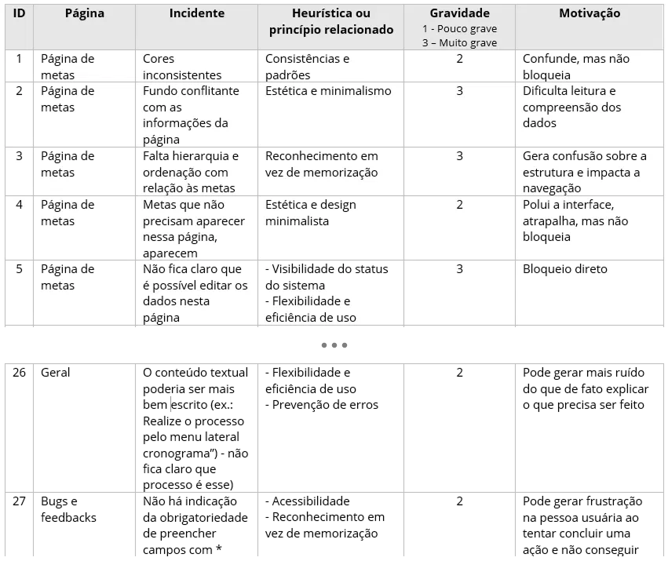
Em vez de tratar cada item isoladamente, agrupei os problemas em quatro temas. Foram esses temas que orientaram as decisões de design.
As 4 questões centrais e o que eu decidi
01 Regras de negócio invisíveis
Cada tipo de meta (KPI, Cronograma, Sub-metas) é planejado e atualizado de um jeito diferente, mas a interface não mostrava isso. Também não ficava claro quais dados eram editáveis, como funcionavam as regras de status nem que metas do tipo Cronograma precisavam de atividades vinculadas.
Decisões:
- Separei as duas ações principais de cada meta: “Iniciar planejamento”, para metas ainda não planejadas, e “Ver mais e atualizar”, para metas em andamento
- Deixei explícito o fluxo de status (não planejada → planejada → em andamento → concluída), que só avança e não volta
- Incluí explicações e dicas por tipo de meta dentro do próprio planejamento, no lugar onde a pessoa precisa delas
Na tela de atualização, essas regras ficaram visíveis:
- Meta pai identificada, para deixar clara a relação entre metas e sub-metas
- Evolução mensal com código de cor e legenda: dentro do planejado, abaixo do planejado e preenchimento atrasado
- Regra explicada no momento certo: quando a meta está atrasada, um aviso pede o preenchimento de Fato, Causa e Ação antes de continuar
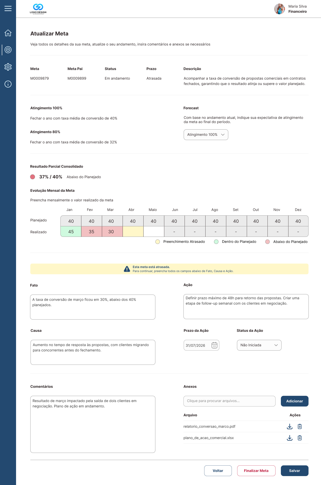
Finalizar uma meta é uma ação sem volta: depois disso, ela não pode mais ser editada. Para evitar erros, criei um modal de confirmação que:
- mostra o resultado consolidado antes da decisão
- avisa quando a meta ainda não atingiu 100%
- explica por que a ação é irreversível (confiabilidade dos dados e histórico)
- só habilita o botão “Finalizar Meta” depois de uma confirmação explícita
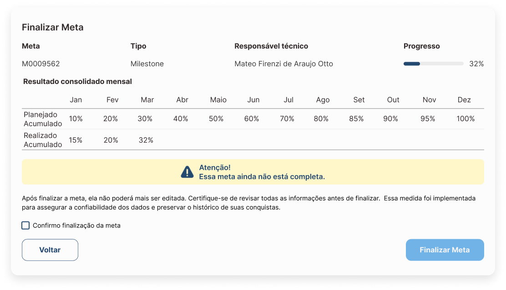
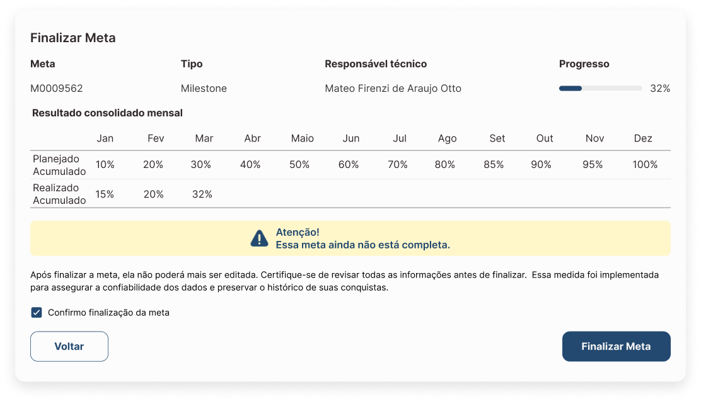
02 Ícones, botões e campos sem rótulo
Ações importantes eram representadas só por ícones, e havia campos sem identificação. Isso obrigava a pessoa a adivinhar ou decorar o significado, com alto risco de erro.
Decisões:
- Todos os campos ganharam rótulo
- As ações de cada meta foram agrupadas num menu de ações (⋮), um padrão reconhecível, que abre opções com texto: “Ver mais e atualizar” e “Iniciar planejamento”
- Os botões de tela passaram a ter rótulo e peso visual de acordo com a importância
- Alguns ícones foram mantidos a pedido do cliente, como os de baixar e excluir anexos na tela de atualização. Nesses casos, reduzi a quantidade e mantive só ícones de significado amplamente conhecido
03 Ruído visual e falta de hierarquia
O fundo competia com os dados, as cores eram inconsistentes, algumas metas apareciam na página sem necessidade e os botões não tinham hierarquia nem posição consistente. Por exemplo, “Excluir” e “Salvar” tinham o mesmo peso visual. Alguns elementos também tinham baixo contraste.
Decisões:
- Reorganizei o Painel de Metas, a tela principal, com informações-chave visíveis: número, tipo, responsável, status e prazo
- Adicionei busca e filtros por tipo, responsável, status e faixa de progresso
- Apliquei hierarquia de botões (primário, secundário e terciário). Na tela de atualização, por exemplo, “Salvar” é o primário, “Voltar” é secundário e “Finalizar Meta”, uma ação sem volta, tem destaque próprio
- Padronizei as cores e corrigi o contraste
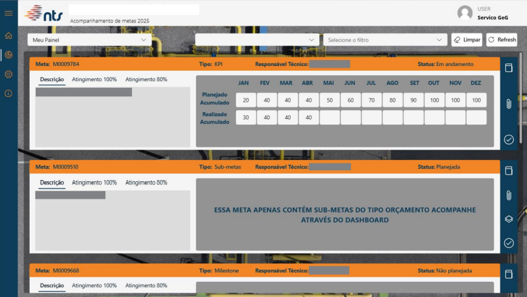
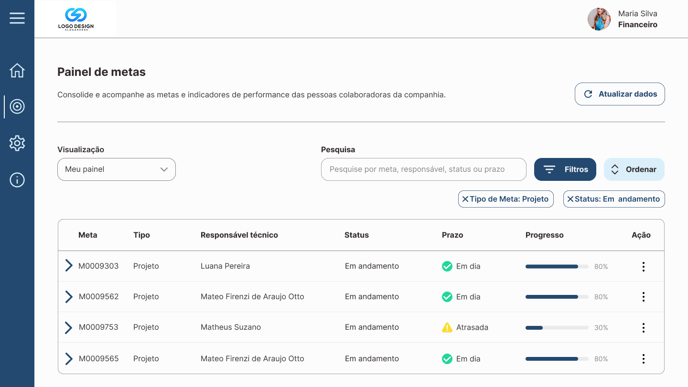
04 Textos que confundiam em vez de orientar
O app tinha mensagens em outro idioma, instruções vagas (como “Realize o processo pelo menu lateral cronograma”), não indicava os campos obrigatórios e não deixava claro se havia limite de caracteres nos comentários.
Decisões: reescrevi os textos com linguagem clara e tom amigável, indiquei os campos obrigatórios, os formatos e tamanhos de anexo aceitos, e incluí uma confirmação de envio.
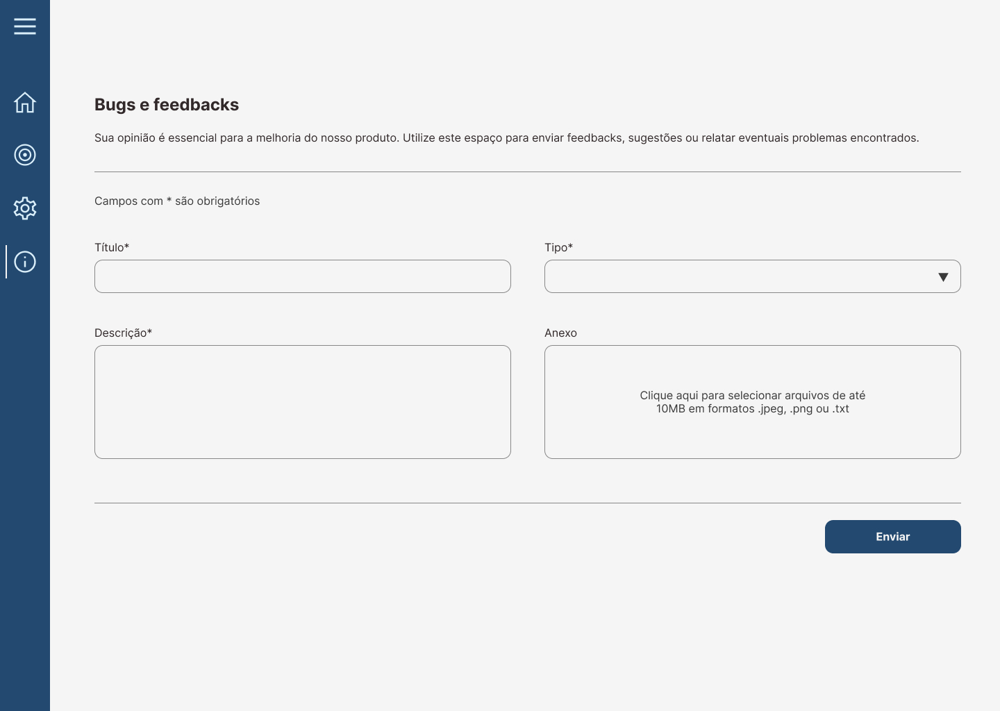
Processo de design
- Wireframes de baixa fidelidade para discutir conteúdo e conceito de cada página, sem distração visual
- Alta fidelidade primeiro no Painel de Metas, a tela principal, para validar a direção visual
- Expansão para as 50+ telas do app
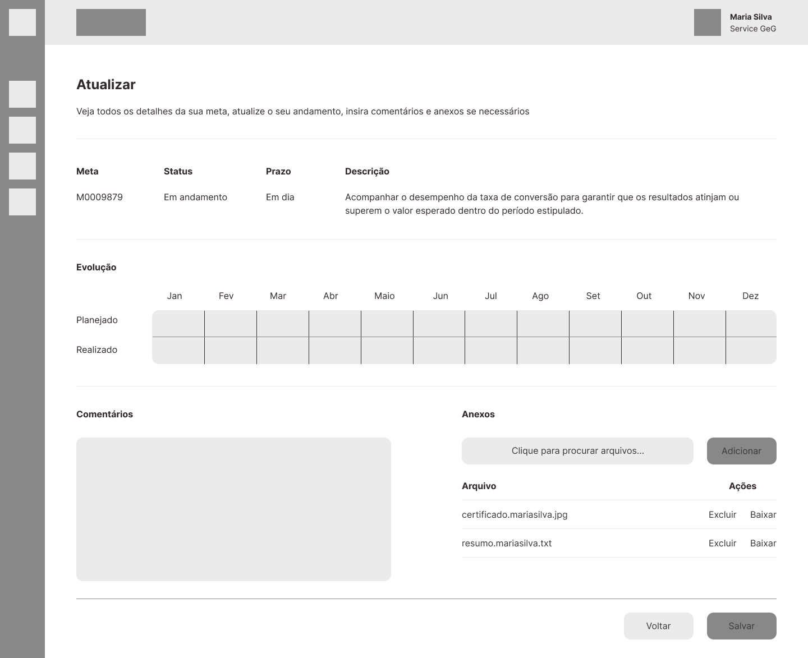
Comparando com a versão final (no tema 1), a tela ganhou a relação com a meta pai, o forecast, o resultado consolidado, o código de cor da evolução mensal e o fluxo de Fato, Causa e Ação para metas atrasadas.
Validação e iteração
Validei a proposta em 10+ sessões com stakeholders do projeto e representantes do RH. Eles são o ponto de contato com os colaboradores e gestores que usam o app, e por isso traziam a perspectiva desses usuários.
Exemplo de iteração: na primeira versão, a tabela mostrava só as informações-chave de cada meta. Isso limpou a tela, mas o cliente sentiu falta de ver a descrição e a evolução mensal sem sair da página.
A solução foi divulgação progressiva: adicionei linhas expansíveis. A informação que antes ficava aberta em todos os cards, poluindo a tela, agora aparece só quando a pessoa pede. Assim, a interface continua simples e o detalhe fica a um clique.
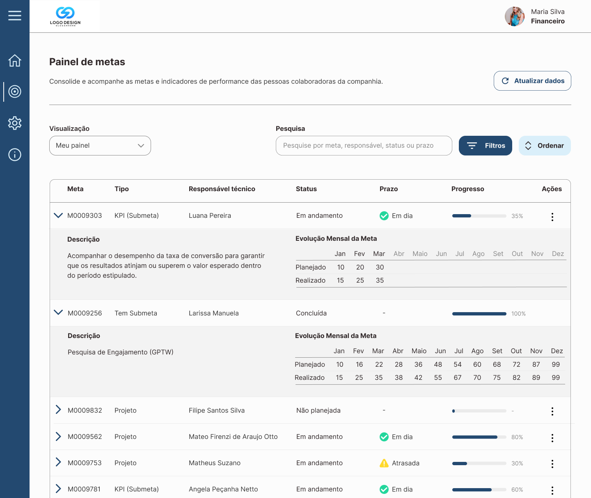
Resultado
- 27problemas mapeados e endereçados na versão final
- 50+telas entregues para desenvolvimento
O cliente destacou que a interface ficou visualmente mais limpa e mais simples de usar.
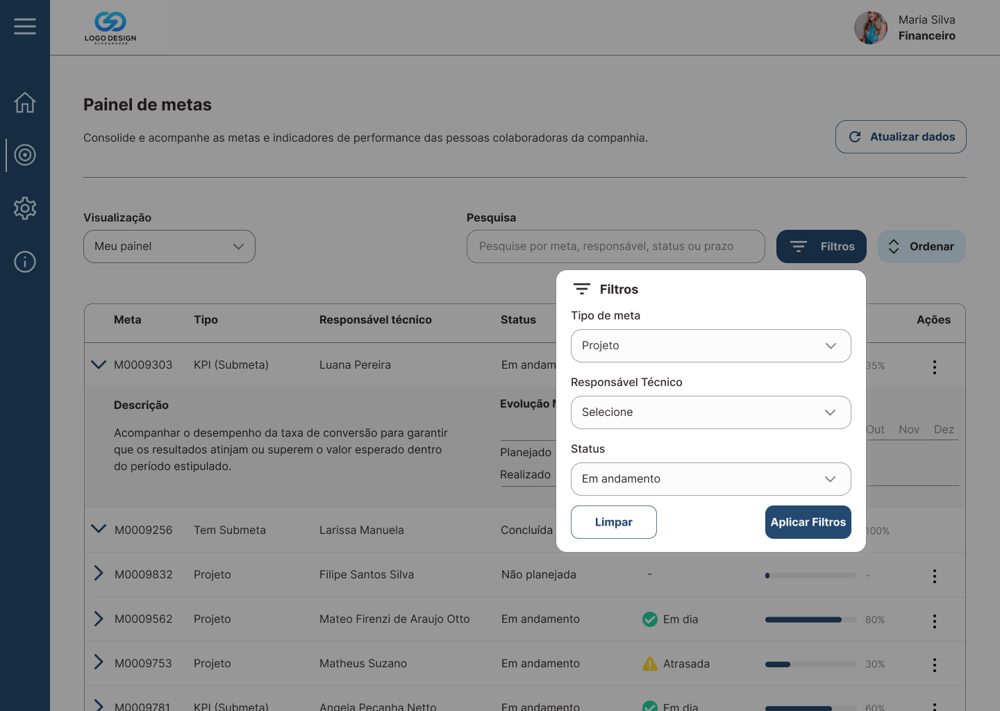
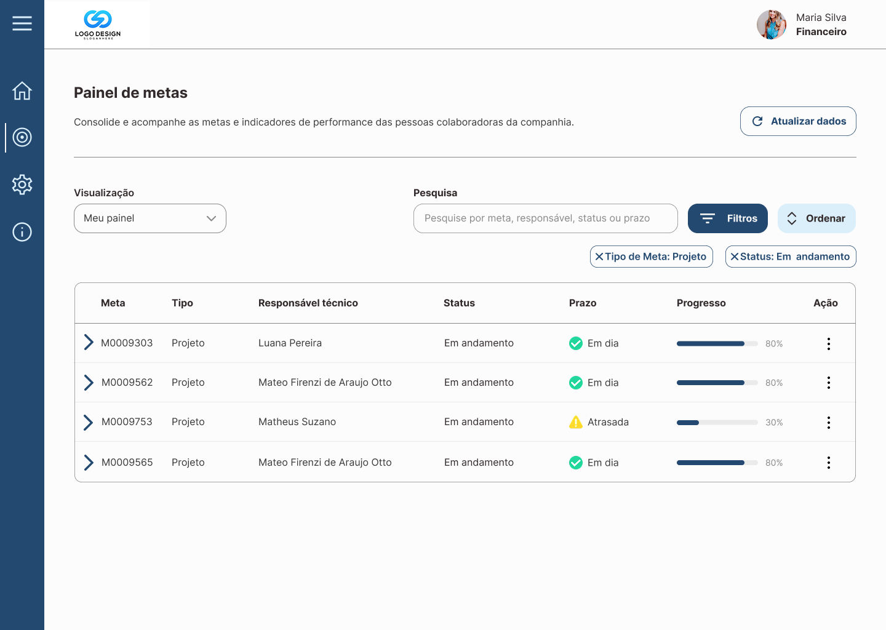
Aprendizados
- A interface tem que ensinar. Quando um produto depende de manual, a documentação está compensando problemas de design. Trazer as regras de negócio para a interface foi a mudança de maior impacto.
- Agrupar antes de resolver. Organizar 27 problemas em 4 temas deixou claro onde estavam as causas e tornou as decisões mais consistentes.
- O que eu faria diferente. As validações foram feitas com stakeholders e RH, que representavam os usuários. Em um próximo ciclo, eu incluiria testes de usabilidade com colaboradores e gestores, de perfis diversos, para medir tempo de tarefa e taxa de erro antes e depois.
Os dados, nomes e identidade visual foram alterados para preservar a confidencialidade do cliente.